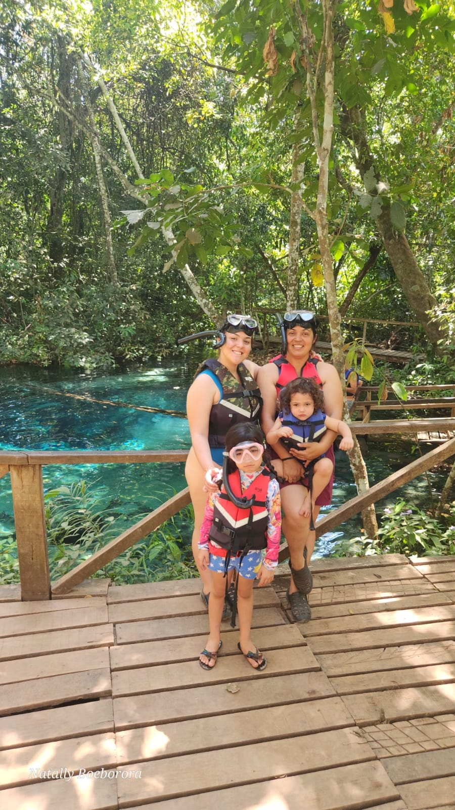
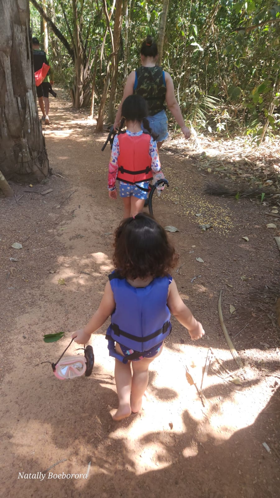
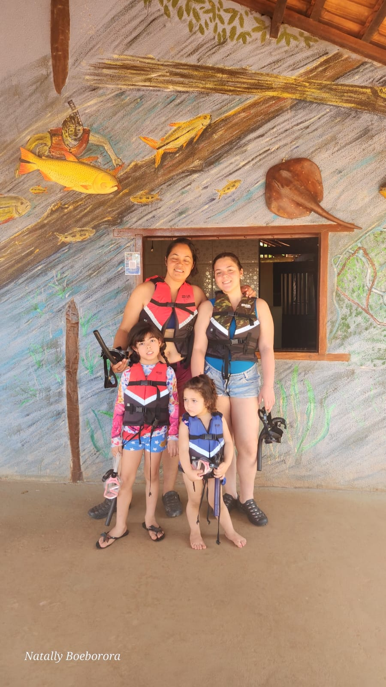
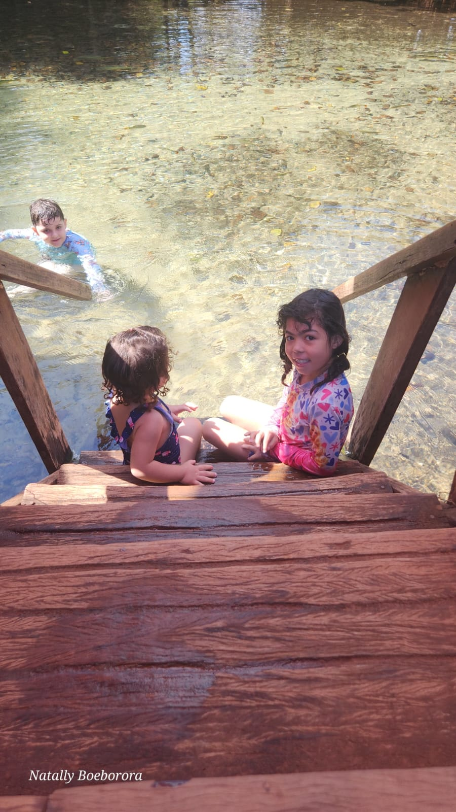

Turismo Infantil
Aventuras educativas e seguras na natureza para crianças descobrirem a magia do mundo
Explorando a Natureza de Forma Segura e Divertida
Como especialista em experiências na natureza com foco em educação ambiental, ofereço passeios e atividades turísticas especialmente desenvolvidas para crianças, combinando diversão, aprendizado científico e segurança.
- Passeios educativos em cavernas adaptados para crianças
- Trilhas ecológicas com interpretação acessível
- Atividades de descoberta de biodiversidade
- Workshops sobre conservação ambiental para crianças
- Experiências sensoriais na natureza
- Programas escolares e grupos familiares
Cada atividade é cuidadosamente planejada para garantir segurança, diversão e aprendizado duradouro sobre a importância da natureza e da sustentabilidade.
Agendar AtividadePor que escolher turismo infantil comigo
🎓 Educação Científica
Conhecimento biológico e ambiental adaptado para crianças de todas as idades
🛡️ Segurança Garantida
Todos os passeios seguem rigorosos protocolos de segurança para crianças
🌍 Consciência Ambiental
Inspirar uma geração que valoriza e protege a natureza
🎉 Diversão Garantida
Atividades lúdicas e engajantes que crianças adoram
Atividades por faixa etária
👶 Pequenos Exploradores (4-7 anos)
Passeios curtos, segredos, descobertas sensoriais e muita diversão
🧒 Jovens Aventureiros (8-12 anos)
Trilhas mais desafiadoras, experiências em cavernas adaptadas, aprendizado científico
👦 Adolescentes Explorador (13-17 anos)
Atividades de ecoturismo, pesquisa ambiental participativa, desafios na natureza
👨👩👧👦 Famílias
Experiências compartilhadas que toda a família pode desfrutar e aprender juntos
Registros



